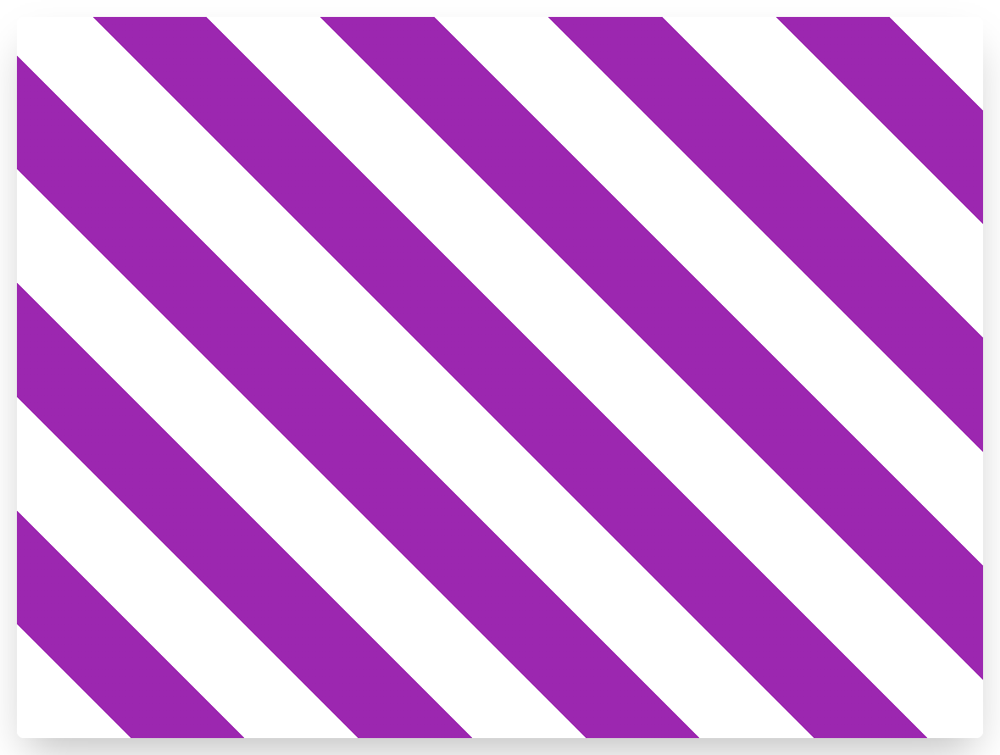

Создайте повторяющийся паттерн следующего вида:

- Направление: 45 градусов
- Прозрачная полоса занимает первые 100 пикселей
- Фиолетовая занимает следующие 100 пикселей
Подсказки
- Используйте цвета из переменных
Создайте повторяющийся паттерн следующего вида:
